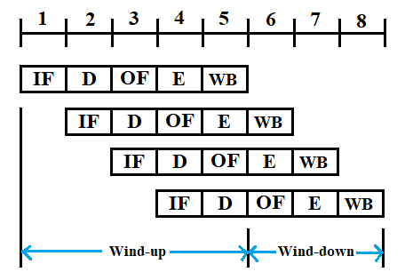
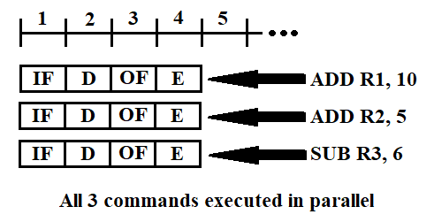
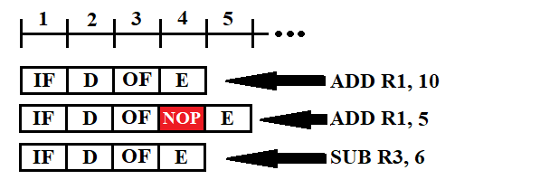

Link: https://www.youtube.com/playlist?list=PLJ5C_6qdAvBFMAko9JTyDJDIt1W48Sxmg
| Memory Models | Parallel Architectures | Programming Models |
|---|---|---|
| Shared Memory (Popular framework - OpenMP) |
A single memory unit is shared by all processors (i.e. all processors have access to this shared memory). Typically a common BUS sits between the memory and the processing units. An Arbiter[^1] figures out which CPU gets access to the memory. Shared memory systems have a limit on number of processors/cores that can access the same memory via the BUS. Thus, here the BUS becomes the bottleneck. |
This assumes that there is a huge global address space (in the memory) that is accessible/visible to all the tasks. It is known as Shared Memory Programming Model. |
| Distributed Memory (Popular framework - MPI) |
Every CPU has its own memory unit. Thus, a CPU and its own memory form a node. They need to be synced up when solving a divided problem. They talk to each other via a Network. The problem of upper limit of number of CPUs/Cores is solved in that the number is bounded by the number of nodes. The bottleneck shifts to the network. |
Here we have Message Passing Programming Model, where each task has its own address space (private). If one task wants to get data from another task, it has to explicitly do message passing over the network. Two important keywords associated with this type of programming model are send and receive (recv). |
| Hybrid (Popular framework combo - OpenMP + MPI) |
In reality, the hybrid approach is generally favoured. It has several nodes, and each node has multiple CPUs. It could also be a CPU and a GPU. | A combination of message passing and shared memory is used. Typically you have different processes running on different nodes of the distributed memory architecture and within each node we use shared memory model for multiple cores. |
Note: It is possible to have a shared memory architecture that works on top of message passing programming model and also to have a message passing architecture that works on top of shared memory programming model.
Take the case of message passing build on top shared memory architecture - a process has its own address space and other process cannot see this address space unless you do explicit message calls.
Similarly, you can do a shared memory programming with distributed memory architecture - The distributed memory will have an image of a global memory (snapshot of all distributed memories combined), but accessing data from a local process becomes the responsibility of the OS (since the memory sharing has to be implicit by default). The programmer does not need to worry about this explicitly, although data fetching rates will vary greatly.
Note: GPUs also adhere to shared memory architecture and programming model. many GPUs at many nodes can be combined via message passing to get a even greater performance. Nvidia GPUs use CUDA framework (built on top of C & C++).
ADD R1, 10 (add 10 to contents of register R1). It happens as follows:1 cycle = 1 ns15 nsADD instruction maybe divided into the following stages (as an example):ADD R1, 10 instruction will be executed as:10 is a constant and R1 is jsut the register, there is no need for operand fetch (OF / memory fetch operation) here.R1, no need for a WR operation as well, so the entire instruction is done in 3 cyclesADD R1, 10 and ADD R2, 5. Pipelining would look as follows:IF will be performed for ADD R1, 10 (using special hardware).ADD R1, 10 will be in decode stage and the IF hardware will be in idle.ADD R2, 5 operation.ADD R1, 10 will be executed and ADD R2, 5 will be decoded.ADD R2, 5 will be executed.ADD R1, 10 to finish completely (total time here would be 6 cyucles). We can utilize the idle hardware to optimize resource utilization and speed up our code
ADD R1, 10, ADD R2, 5, and SUB R3, 6. If the processor figures out that these instructions are independent of each other, then it can execute them in parallel as follows: 
This is called Superpipelining.
But this requires multiple logical units (multiple hardware for each of the stages) - since you will be fetching more than 1 instruction at at time, decoding more than 1 instruction at a time, etc.
What if 2 of these operations were not independent (ex: ADD R1, 10 and ADD R1, 5), in theory these could still be parallelized (superpipelined) as follows:

As we can see, the instruction fetch (IF), decode (D), and operand fetch (OF) can be done in parallel. But when ADD R1, 10 is being executed, ADD R1, 5 undergoes NOP (read as no-op or no operation instruction/cycle). Once R1 is free, then 5 is added to R1 in the next cycle.
This kind of architecture is useful for linear algebra operations - operations like scaling a vector, or computing dot product of two vectors, etc can. be performed in parallel. (Here, operation is performed on completely independent datasets)
Data Dependency: ADD R1, 10 and ADD R1, 5 are not data independent operations and hence it is not possible to make them 100% Superpipelined. A NOP cycle is necessary.
Branching: Let's say that we put in 2 instructions at a time in parallel (in a superpipeline). From the diagram below, let's say one of the instructions (marked in red) has conditional branching. Until decoding of this instruction, instructions are let in two at a time in the superpipeline (instructions in blue and green). Once that branching instruction is decoded, we get to know that we have to jump to some other the code. Thus, the insturctions already loaded into the pipeline (blue and green) have to be scrapped. This leads to wasted work.
@1000) to a register (say R1) - ADD R1, @1000. The 2nd instruction is to add a constant to R1 - ADD R1, 3. As seen from the figure: 
Thus, ADD R1, 3 will have to wait for ADD R1, @1000 to finish operand fetch (from main memory) and execution, before it can resume. Thus, it is a waste of pipelining.
ADD R1, 52, ADD R1, 6, and ADD R2, 8. Modern processors have a window before putting the code in pipeline, where they examine the code. It will try to figure out if the next piece of code can be executed in parallel with current code. In case of our example, the 1st 2 commands are data dependent and therefore cannot be executed in parallel. However, the 3rd can be. Therefore, the processor will put ADD R1, 52 and ADD R2, 8 in parallel in the pipeline for execution (eventhough ADD R1, 6 is the 2nd command). But, in the end it has to make sure that ADD R1, 6 is completed before ADD R2, 8. Thus, out-of-order execution can be tricky.| Superpipelining | VLIW |
|---|---|
| This is done dynamically (at runtime). | This is done statically (at compile time). |
| This needs complex hardware. | The hardware circuit can be much simpler. |
| Since this is done in realtime, the proessor has a very small window to decide on which instructions to club together in parallel and hence it cannot get the most parallel performance. | It is done offline (at compile time), thus the processor has enough time to try out large number of permutations and combinations to get optimal parallelized code. This may take a large compile time, but it pays off with faster exeution. |
| Superpipelining can take advantage of dynamic state and make decisions about order of execution better than VLIW. | The major drawback is that it does not have a view of the dynamic state - what is currently going on. Eg. if an operand fetch takes long time, VLIW cannot choose another independent instruction to execute in parallel to avoid wasting time. |
| In case of branching (like loops), the superpipeline has access to branch history table and if it predicts that an instruction is going to be executed n number of times through the loop, it will just fetch the instruction from this branch history table. | Again, the VLIW cannot take advantage of dynamic state features like branch history table, and hence it will fetch the instructions again from the memory instead of from the cached table, thus wasting precious time. |
OF) from a particular memory location and receiving that data. It is denoted by l.C = A x B. Each matrix is of the size 64 x 64 and each element has size 4 bytes.
The simplest code would be:// Initialize C to zero
for (i = 0; i < n; ++i)
for (j = 0; j < n; ++j)
for (k = 0; k < n; ++k)
C[i][j] += A[i][k] * B[k][j];
load R1, [R2] // store the address of A[i][k] in R2
// and then load location specified by R2 in R1
load R3, [R4] // load B[k][j] location in R4 and then data in R4 to R3
madd R5, R1, R3 // multiply and add: C[i][k] += A[i][k] * B[k][J]
load instructions will take 100 ns each (so total of 200 ns)madd (say 5 ns)105 nsload and madd, incrementing i, j, and k is insignificant, so we ignore it (for simplicity)k: multiply and add (eventhough it is a single instruction here at ASM level). Thus, ##OPS = 2Time ≈ 200 nsFLOPS = 2 OPS / 200 ns = 2 * 10E9 / 200 = 10 MFLOPS1 GHz, so in theory we should be able to perform 10E9 OPS, but in reality, the maximum is 10 MFLOPS = 10 * 10E6 OPS = 10E7 OPS.[^1]: Arbiter: Arbiters are electronic devices that allocate access to shared resources. A bus arbiter is a device used in a multi-master bus system to decide which bus master will be allowed to control the bus for each bus cycle. The most common kind of bus arbiter is the memory arbiter in a system bus system. A memory arbiter is a device used in a shared memory system to decide, for each memory cycle, which CPU will be allowed to access that shared memory.1
[^2]: Cycle: Let's consider a processor having 1GHz as clock frequency - this means that: